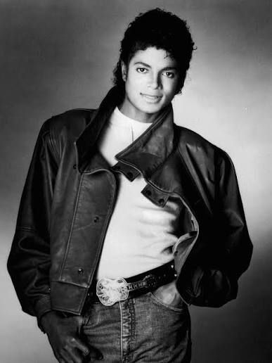

Michael Jackson (1958–2009), conocido universalmente como el "Rey del Pop", es una de las figuras culturales más grandes, influyentes y famosas de la historia de la humanidad. Su carrera comenzó desde muy niño con sus hermanos en los Jackson 5, pero fue su faceta como solista la que lo convirtió en un fenómeno global sin precedentes, redefiniendo la música, el baile y la industria del entretenimiento.
La fama de Michael Jackson superó las barreras del idioma y la geografía. En los años 80 y 90, su nivel de reconocimiento era tan masivo que se convirtió en un ícono global. No solo revolucionó la música pop, sino que transformó los videos musicales en verdaderas obras de arte cinematográficas (como Thriller o Bad), obligando a canales como MTV a cambiar su programación para dar espacio a artistas afroamericanos.
Además, dictó tendencias de moda (el guante blanco, las chaquetas militares) y popularizó pasos de baile que hoy son universales, como su famoso e histórico "Moonwalk".
Michael Jackson no solo acumuló números impresionantes, sino que cambió las reglas de cómo se produce, se promociona y se vive la música pop en todo el mundo.